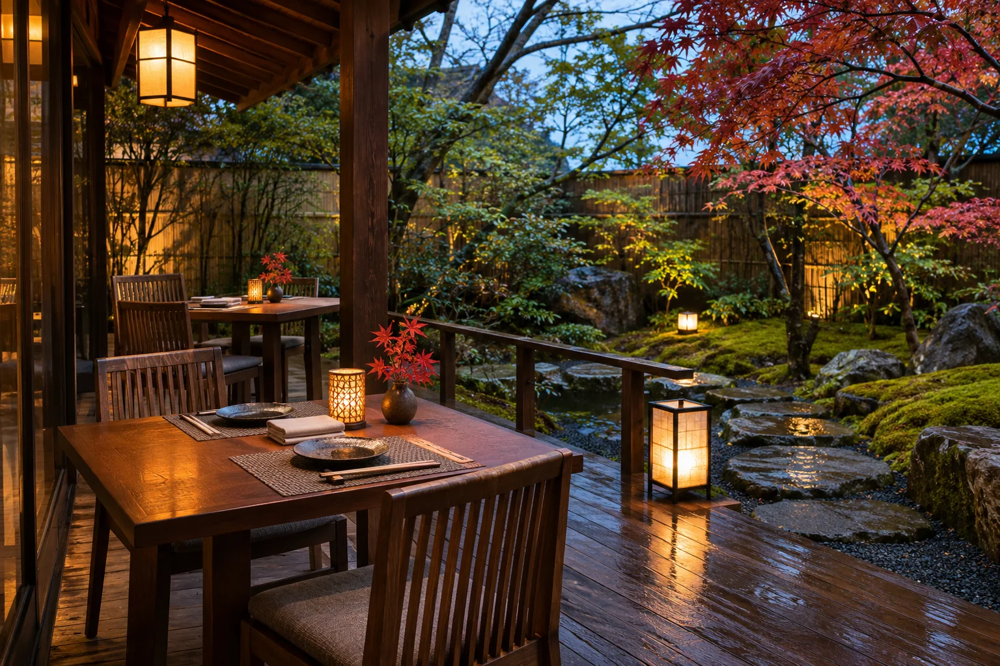

東京 · ПАМЯТЬ ВЕЧЕРАЛичный кабинет · данные только в этом браузере
Ваш профиль
Заказы, бронирования и избранное остаются только в этом браузере. Профиль не защищён серверной авторизацией, а хранилище браузера не зашифровано — используйте вымышленные данные.
Локальные записи
Заказы
Локальные записи
Бронирования
Избранное
Сохранённые блюда
Только этот браузер
Контактный профиль
Адреса · локально
Сохранённые адреса
Контроль данных
Настройки демо-профиля
Сотрите все локальные записи этого сайта с устройства. Это действие нельзя отменить.
Следующий вечер · учебный сценарий
Пусть сезон задаст настроение
Выберите дату и формат вечера. Бронирование в демоверсии сохраняется только как запрос и не резервирует стол.
Перейти к бронированию ↗